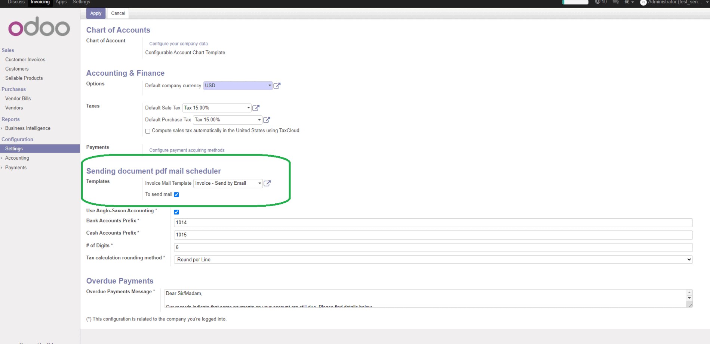

Schedule sending invoice pdf by cron

Scheduazione per invio pdf tramite cron



This module sends mails with invoice pdf to invoice customers using cron. In this way ala invoices can be automatically sent to customers.

Questo modulo invia le mail con le fatture pdf ai clienti usando lo schedulatore. IN questo modo le fatture pdf possono essere inviate automaticamente.


Global configuration:
Invoicing » Configuration » Sending document pdf mail scheduler » To send mail
Invoicing » Configuration » Sending document pdf mail scheduler » Invoice Mail Template
Specific configuration:
Invoicing » Configuration » Accounting » Fiscal Position » To send mail
Invoicing » Sales » Customers » To send mail
Mail are scheduled depending on above values as follow:
If global "To send mail" is True, invoice pdf will be sent if customer and fiscal position are not disabled. If global "To send mail" is False, invoice pdf will be sent if customer or fiscal position is enabled.

Configurazione globale:
Contabilità » Configurazione » Schedulatore invio documenti pdf con mail » Inviare mail
Contabilità » Configurazione » Schedulatore invio documenti pdf con mail » Modello mail
Configurazione specifica:
Contabilità » Configurazione » Contabilità » Posizione fiscale » Inviare mail
Contabilità » Vendite » Clienti » Inviare mail
la schedulazione avviene in base ai parametri precedenti come segue:
Se il valore gloable "Inviare mail" è vero, i pdf sono inviati se il cliente e la posizione fiscale non disabilitano l'azione. Se il valore gloable "Inviare mail" è false, i pdf sono inviati se il cliente o la posizione fiscale abilitano l'azione.


When an invoice is create, the flag "To send mail" is set or reset based on configuration values. This value can be updated by user.
When cron action starts, it sends mail for all invoices which have flag "To send mail" set to true. After invoice pdf is sent, the flag is reset.

Quando viene creata una fattura l'indicatore "Inviare mail" è impostato in base alle regole di configurazione. Questo valore puà essere modificato dall'utente finale.
Quando l'azioni programmata parte, tutte le fatture con il flag "Inviare mail" attivo son inviare al cliente ed l'indicatore viene azzerato.
Authors | Autori:
Contributors | Partecipanti:
This module is maintained by the SHS_AV s.r.l..
This module is part of l10n-italy-supplemental project.
Published information on | Informazioni pubblicate: 2024-08-31